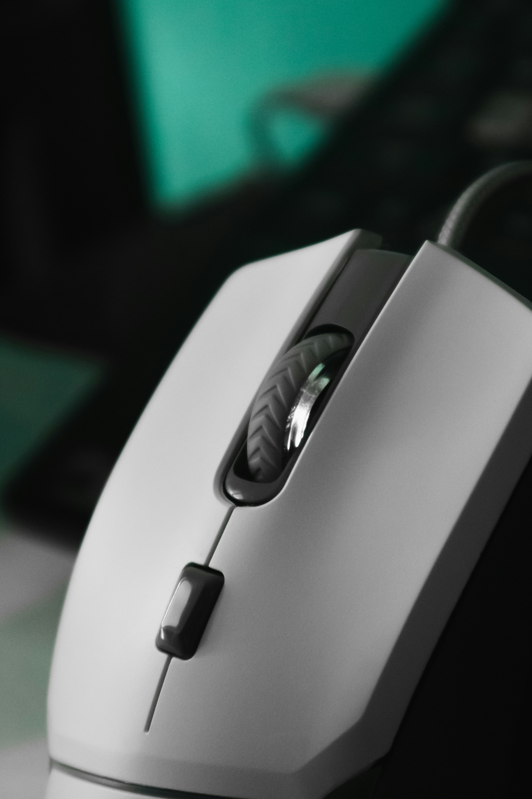

Mouse Repairs
Learn how to solve common computer mouse problems with these simple steps.

1. Mouse Not Responding
Problem: The mouse does not move the cursor.
How to fix it:
- Reconnect the mouse.
- Try another USB port.
- If wireless, replace or recharge the batteries.
2. Cursor Moving Irregularly
Problem: The cursor jumps around or moves unexpectedly.
How to fix it:
- Clean the sensor underneath the mouse.
- Use the mouse on a flat surface or mouse pad.
- Reconnect the mouse and test it again.
3. Scroll Wheel Not Working
Problem: The scroll wheel does not move the page up or down.
How to fix it:
- Check for dust around the scroll wheel.
- Gently clean the area.
- Reconnect the mouse and test the wheel.